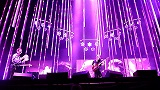
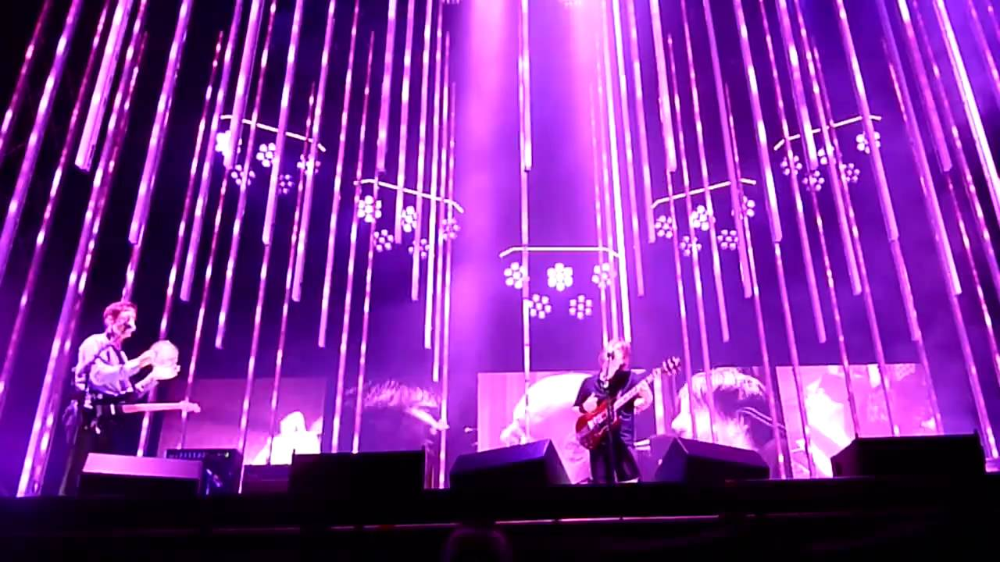

This first example uses a transition effect to enable hovering
over a thumbnail to view the image larger. This is an image of the
band RadioHead playing a live show.


This next example is a color changing box. Click the different buttons
to see the color gradually change. The last example is beneath that. It is a
shape that transitions to a new color and border upon hovering. It also
moves on the page. Hover your mouse over the
circle to see the rising sun. It also uses a JavaScript function to execute
the change.
hover here to see the sun rise.
Here is a box. You can change the color by clicking the buttons. Have fun!!